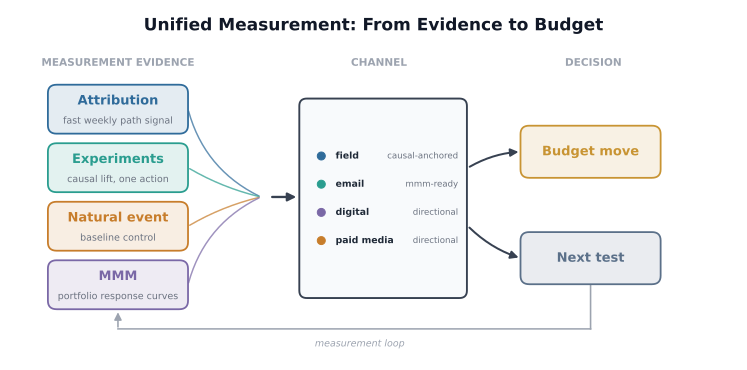
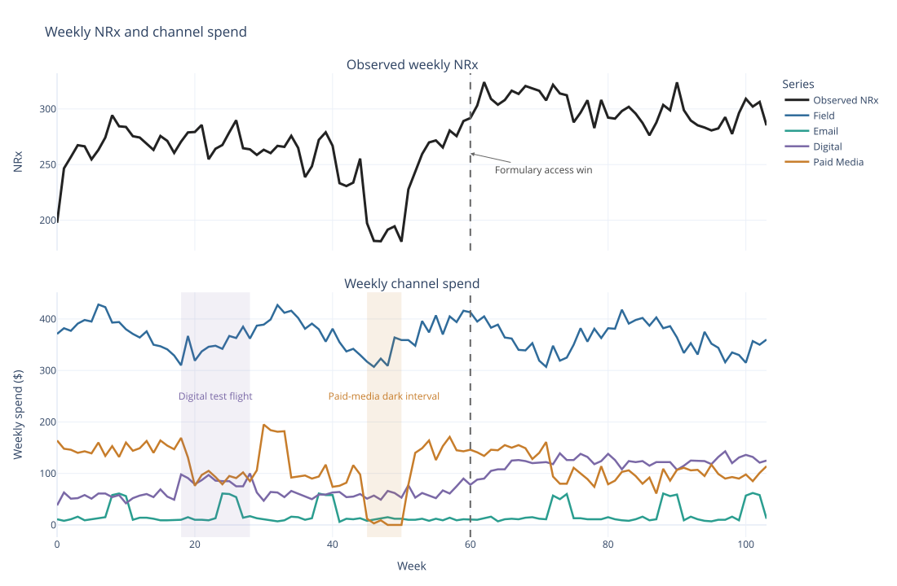
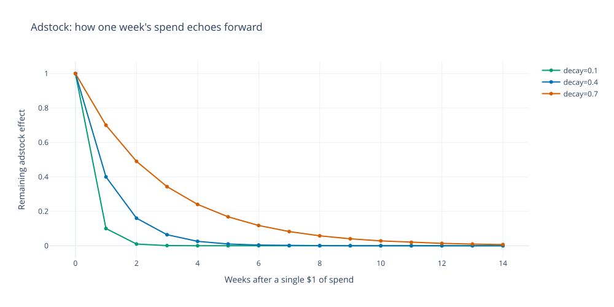
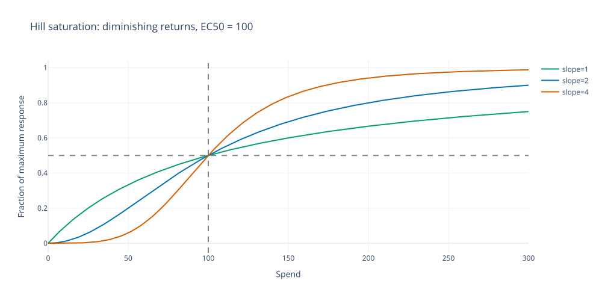
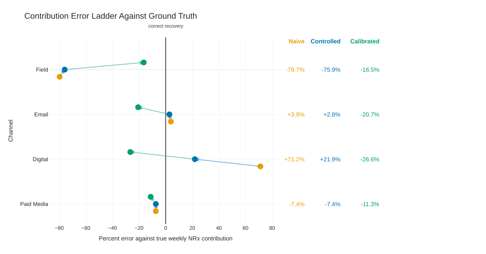
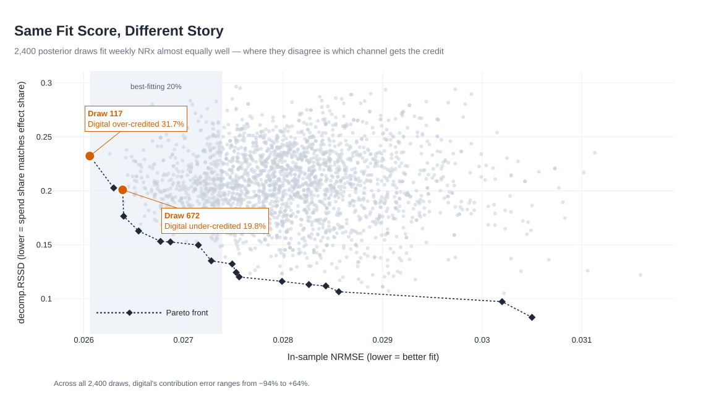
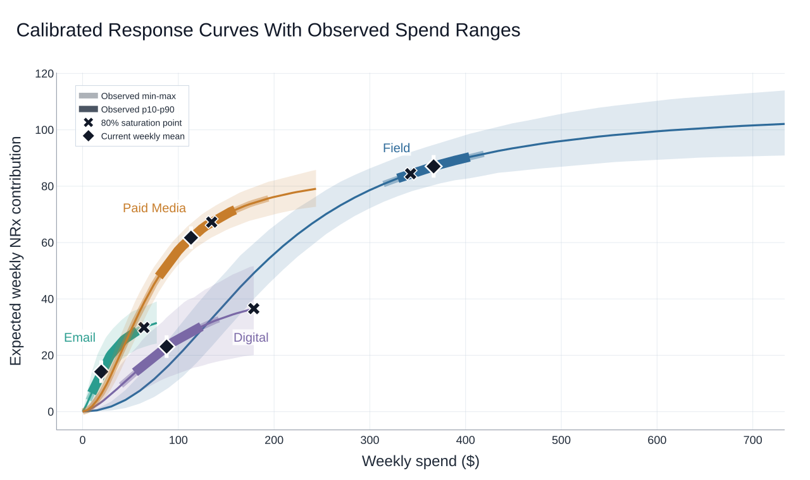
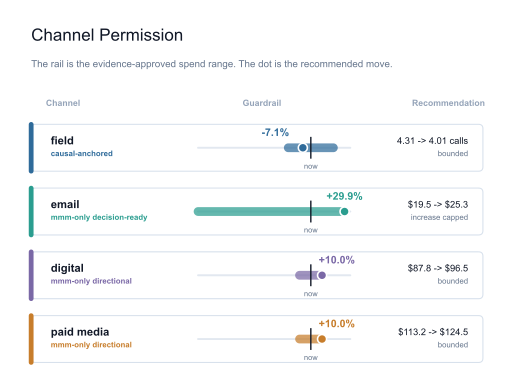
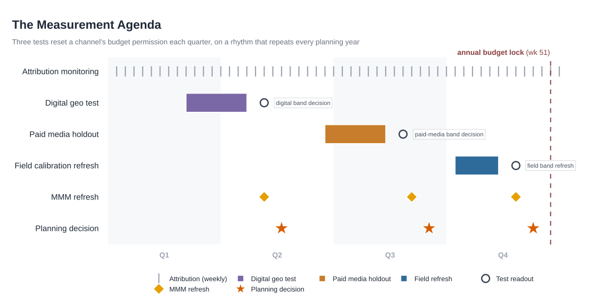

Chapter 13: Unified Measurement: Attribution, Experiments, and MMM
Roventra has to set next year's spend across field, email, digital, and paid media. NRx moved during the year, but the weekly total does not show how much of that movement each channel actually caused. Without that NRx contribution split, the team cannot tell which channel should get more budget and which channel has already reached diminishing returns.
The brand has multiple ways to measure what each channel is doing. Attribution is fast, refreshed every week, but it only shows correlation between a touchpoint and a prescription, not proof of cause. A randomized experiment or similar causal design proves cause, but only for the one channel, audience group, and time window it actually tested. MMM is the only read that covers the whole portfolio at once, estimating every channel's share of the swings in weekly NRx. The planning decision needs all of these measurement solutions: which channel should get more budget now, which channel has already hit the ceiling, and which channel needs a fresh test.
In this chapter, we build the MMM read by hand, because portfolio allocation needs a response curve for every channel. We then read that MMM result alongside the attribution, experiment, and causal evidence already available for each channel from previous chapters. The final deliverable is a budget recommendation for each channel: how much its spend should change, what evidence backs that change decision, and what test should run next before it moves further.
13.1 Matching Measurement Method to Decision
This section discusses the consolidation of attribution(chapter 8), randomized experiments(chapter 10), natural experiments (chapter 11), and observational causal inference (chapter 12) already have taught in earlier chapters. We combine separate read from those methods into one portfolio budget call across field, email, digital, and paid media.
Attribution reads a patient's or prescriber's recorded sequence of touchpoints and assigns each one partial credit for the prescriptions that follow. It refreshes weekly or faster, so it is the quickest read available, but the credit is a correlation: it flags which channels showed up before a response, not which one caused it. A channel with high recorded credit becomes the next candidate for a randomized test, and attribution also sanity-checks MMM's channel ranking once that model is fit. Uplift and response modeling work at the same observational level, scoring an individual's or segment's propensity to respond, and its output supplies candidate segments for randomized experiments.
A randomized experiment tests one channel or action against a held-out population and produces a causal lift number for that test alone, on a timeline of weeks to a quarter; its result can anchor or calibrate an MMM prior for that channel. A geo-holdout does the same at the level of a market or geography, and its result anchors the MMM estimate for the tested channel. A natural experiment borrows causal strength from an external event the brand did not control, such as a formulary change, and its main job is to flag the confound MMM must control for.
MMM reads channel activity and total NRx aggregated across the full portfolio and refresh on a planning cadence, quarterly to annual, so it is the only method that estimates every channel's contribution to the same outcome at once. That scope is also its weakness: MMM is observational and assumes no unmeasured confounder unless a causal anchor, known event control, or model-health check backs up its estimate for that channel. MMM's own output also flags which channels carry weak evidence or high error and need a test, closing the loop back to attribution and experiments.

Figure 13.1. Unified measurement flow from evidence to budget: attribution, experiments, natural events, and MMM feed a comparability check, then a decision record, guardrails, the budget recommendation, and the next-test agenda.
The unified measurement decision combines these reads into one status per channel, continuously updated as each method refreshes, and carries the strongest available evidence per channel. Table 13.1 maps each method to the decision.
Table 13.1. What each measurement method is best suited to decide, and what it cannot decide alone.
| Method | Best decision it supports | Should not decide alone |
|---|---|---|
| Attribution (Chapter 8) | Fast, granular channel-mix or creative optimization | Portfolio budget moves; whether a channel is causal at all |
| Uplift / response modeling (Chapter 8, 9) | Targeting and next-best-action within a channel | Cross-channel portfolio allocation |
| Randomized experiment (Chapter 10) | Whether one specific action causes lift, and how much | Channels or populations outside the tested scope |
| Geo-holdout / causal-impact read (Chapters 10 and 11) | Calibrating one channel's response curve at a spend level | Channels never included in a geo test |
| Natural experiment / quasi-experimental read (Chapter 11) | Estimating the effect of an event neither team controlled | Routine channel budget decisions absent a comparable event |
| Marketing mix model (MMM) | Portfolio-level budget allocation across all channels at once | Moving an unconstrained channel that has not cleared the model-health gate |
| Unified measurement decision | How much budget movement each channel's evidence currently supports |
At the start of this chapter, the non-MMM evidence is already known, while the MMM status is still empty. Field has attribution, an experiment, and a geo-holdout. Email and paid media have attribution only. Digital has an authenticated-web proxy that can check scope but cannot calibrate the full digital spend lever. The formulary access event is a baseline control.
Table 13.2. Decision evidence before the MMM fit.
| Channel or record | Evidence available now | MMM status | Allowed use before MMM |
|---|---|---|---|
| field | Attribution, experiment, geo-holdout | To be fit below | Calibration anchor and later budget guardrail |
| Attribution only | To be fit below | Scope check and test candidate | |
| digital | Authenticated-web attribution proxy | To be fit below | Proxy scope check and test candidate |
| paid_media | Attribution only | To be fit below | Scope check and test candidate |
| portfolio baseline | Natural-experiment access event | Control term | Baseline control only |
MMM reads a weekly aggregate series: channel activity and total NRx. Privacy rules, consent limits, and tighter data-use controls make person-level tracing harder to use and share, which is one reason MMM gets renewed attention. Its causal weakness is also visible. If two channels rise together, or a competitor launch, payer change, or seasonal pattern moves NRx during a spend flight, the model can credit a channel for movement it did not cause. We build the MMM model next, then carry its output into the guardrails every later budget move must follow.
13.2 Build The MMM Model
The portfolio budget needs a channel-level breakdown. This section builds the MMM model, starts with weekly NRx and channel activity, then turns that activity into response shapes the model can estimate.
13.2.1 Weekly NRx and Channel Activity
generate_mmm_data() in data.py builds 104 weeks of NRx and four promotion series: field calls, and dollar spend for email, digital, and paid media. The series has a linear trend, a 52-week seasonal cycle in underlying NRx, and one event: a formulary access win at week 60 that permanently raises baseline NRx. true_channel_share() in the same module reports the ground-truth weekly contribution each channel actually produced, computed from the parameters used to generate the data.
Listing 13.1: Build the weekly series and inspect its structure
from data import generate_mmm_data, true_channel_share
weekly = generate_mmm_data()
print("Weekly series sample:")
print(weekly[["week_index", "nrx", "calls_field", "spend_field", "spend_digital"]].head().to_string(index=False))
truth = true_channel_share(weekly).copy()
truth["component"] = truth["channel"].replace({"baseline (trend + seasonality + access event)": "baseline"})
truth["share_of_total_pct"] = (truth["true_contribution_share"] * 100).round(1)
print("\nTrue modeled contribution:")
print(truth[["component", "true_mean_weekly_contribution", "share_of_total_pct"]].to_string(index=False))
Weekly series sample:
week_index nrx calls_field spend_field spend_digital
0 197.7 4.37 371.0 38.0
1 246.6 4.50 382.0 63.0
2 256.8 4.44 377.0 51.0
3 267.4 4.61 391.0 52.0
4 266.4 4.69 398.0 58.0
True modeled contribution:
component true_mean_weekly_contribution share_of_total_pct
field 104.74 38.1
email 13.26 4.8
digital 28.99 10.5
paid_media 66.08 24.0
baseline 62.10 22.6
Field carries the largest true share of modeled weekly NRx, 38.1%, followed by paid media at 24.0% and baseline at 22.6%. Digital and email are smaller, 10.5% and 4.8%. None of the four fitting steps is allowed to see these numbers; they exist only to check the fitted model against known ground truth.

Figure 13.2. Observed weekly NRx above weekly channel spend, with the formulary access event marked at week 60. Synthetic data.
Figure 13.2 shows the main confound: digital ramps up a few weeks before the formulary access win and stays elevated afterward. Field cycles between roughly 3.6 and 5.0 calls a week, which translates to about $310 to $430 at $85 per call assumption. Email runs a low, near-flat base rate punctuated by six short campaign bursts; paid media runs its usual spring/summer flight but also carries one six-week dark interval, near-zero spend, and one off-season pulse outside its normal flight window; digital starts near $55, holds an early standalone test flight in weeks 18 through 28, then ramps up starting a few weeks before the formulary access event and stays elevated afterward, the same way a real brand team leans into a channel once payer access improves.
13.2.2 Carryover: Adstock
A field visit's effect does not end when the rep leaves the office. The physician may recall the conversation for the next appropriate patient. Adstock captures that carryover with one geometric recursion:
Here, A_t is adstock in week t, S_t is spend in week t, d is the decay rate, and A_{t-1} is adstock from the prior week.
Take a small five-week toy series, spend of $100, $50, $100, $50, $100, with decay 0.4:
Table 13.3. Adstock carryover on a toy five-week series, decay = 0.4.
| Week | Spend | Adstock |
|---|---|---|
| 1 | 100 | 100.0 |
| 2 | 50 | 50 + 0.4(100) = 90.0 |
| 3 | 100 | 100 + 0.4(90) = 136.0 |
| 4 | 50 | 50 + 0.4(136) = 104.4 |
| 5 | 100 | 100 + 0.4(104.4) = 141.8 |
Week 5's adstock, 141.8, is larger than week 5's own spend, 100, because prior weeks of spend are still partly in effect. A decay of 0 would return the raw spend series unchanged; a decay near 1 would make the channel's influence nearly permanent.
The clearest way to see carryover is to isolate it: send a single $1 of spend through the recursion and watch how much of it is still there in later weeks.

Figure 13.3. A single week's spend, traced forward through the adstock recursion at three decay rates.
At decay 0.1, a dollar spent this week is functionally gone within two or three weeks. At decay 0.7, more than a third of it is still influencing NRx five weeks later, and a visible trace remains past week 12.
13.2.3 Diminishing Returns: Hill Saturation
Adstock output passes through a Hill saturation function before it reaches the regression:
Here, x is the adstock input, ec is the half-saturation point EC50, the spend level at which a channel reaches half its maximum response, and slope controls how quickly the curve rises around EC50.

Figure 13.4. Hill saturation curves at EC50 = 100 for three slope values, all crossing 50% response at EC50.
Every curve passes through the same point, half of maximum response at EC50. Below slope 1, gains come fast at low spend and level off early. At slope 2 or higher, the curve turns S-shaped: response barely moves below roughly half of EC50, accelerates through the middle, then flattens the same way a slope-1 curve does at high spend. A channel's recovered slope tells a brand team whether a little spend already produces a meaningful lift (low slope, fast early return) or whether it needs a minimum threshold of spend before it starts paying off at all (high slope, an S-shaped floor).
This function is named for A.V. Hill's 1910 equation describing oxygen binding to hemoglobin: the same S-shaped saturation curve pharmacology uses for dose-response also describes the response of prescriptions to promotional dose.
13.2.4 Fit the First MMM
With the weekly spend series and weekly NRx data in hand, the first fit estimates the channel coefficients, decay rates, EC50 values, slopes, baseline, and noise together. This first fit is diagnostic: without a control for the known access event, it credits the wrong channel for NRx that the event actually caused.
The model is a nonlinear regression of weekly NRx on adstocked, saturated channel spend:
\(y_t\) (nrx) is weekly NRx, \(x_{c,t}\) (spend_{ch} or calls_field) is channel \(c\)'s raw spend, \(z_{c,t}\) is its adstocked spend with decay \(\delta_c\) ({channel}_decay), \(\beta_0\) (baseline0) is the baseline, \(\beta_c\) ({channel}_coef) is channel \(c\)'s coefficient, \(k_c\) and \(s_c\) ({channel}_ec50, {channel}_slope) are its Hill saturation parameters, and \(\epsilon_t\) (noise_sd) is weekly noise. When controls are on, a trend term, two seasonality terms, and a formulary-event step add to \(\beta_0\).
The full model has 22 parameters when controls are on: 2 global terms, baseline and noise; 16 channel terms, 4 per channel across 4 channels; 4 control terms, trend, seasonality sine, seasonality cosine, and access event.
The model is fit with MCMC, short for Markov chain Monte Carlo, using random-walk Metropolis-Hastings in Python. Adstock and Hill make the weekly regression nonlinear, so there is no closed-form to solve in one step. MCMC helps by drawing many plausible parameter sets, checking each one against the weekly spend and NRx data, and keeping the ones that fit well enough to map out the full parameter posterior space.
A frequentist fit of this same regression would search for the single coefficient vector that minimizes squared error and report a standard error from asymptotic theory around that one point. The Bayesian fit instead returns a distribution over plausible parameter vectors, weighted by how well each fits the data and by the priors below, which is what lets a data-starved channel lean on its prior instead of returning an unstable or undefined point estimate.
fit_bayesian_mmm() in model.py runs 4 independent chains from dispersed starting points drawn from the priors. Each prior encodes a reasonable channel-category assumption before the fit sees the weekly data.
| Prior component | What it controls | Starting assumption |
|---|---|---|
| Channel coefficient | Channel response scale | Centered at 60 NRx with wide uncertainty |
| Decay | Carryover from earlier activity | Field and paid media can last longer than email and digital |
| EC50 | Where the Hill curve reaches half its maximum | Centered on each channel's observed average input |
| Hill slope | How quickly response rises near EC50 | Centered at 1.5 |
Since the weekly data do not always separate channel effects cleanly, these priors provide good starting points. When a channel has little independent movement, the posterior can lean heavily on the prior and on any controls included in the model. Data analyst would center these priors on benchmarks, prior campaigns, or a comparable brand's fitted curve, while keeping the width wide enough that a strong signal in the data can override it.
Each chain tunes its step size during warmup, then at every step proposes a new parameter vector by adding random noise to the current one and accepts or rejects it:
\(u\) is a draw from Uniform(0, 1), \(\theta^\star\) is the proposal, \(\theta\) is the current value, and \(y\) is the observed weekly data.
A proposal with higher posterior density is always accepted. A worse proposal is accepted with probability equal to the posterior ratio, which lets the sampler move through the parameter space and fill in the posterior instead of stopping at one starting guess.
Listing 13.2: Fit the naive model and check convergence
from model import fit_bayesian_mmm, posterior_summary
naive_draws = fit_bayesian_mmm(weekly, use_controls=False)
summary = posterior_summary(naive_draws)
coef = summary[summary.parameter.str.endswith("_coef")].copy()
coef["channel"] = coef["parameter"].str.replace("_coef", "", regex=False)
coef["mean"] = coef["posterior_mean"].round(1)
coef["ci90"] = "[" + coef["p5"].round(1).astype(str) + ", " + coef["p95"].round(1).astype(str) + "]"
coef["ess"] = coef["ess"].round(0).astype(int)
print(coef[["channel", "mean", "ci90", "rhat", "ess"]].to_string(index=False))
channel mean ci90 rhat ess
field 54.6 [17.6, 93.0] 1.040 658
email 41.4 [27.8, 60.7] 1.034 696
digital 111.4 [90.6, 136.6] 1.007 674
paid_media 107.9 [89.8, 141.5] 1.110 667
Each row's mean is the posterior mean of that channel's raw regression coefficient, not yet a weekly NRx number by itself, and not yet comparable across channels: field's coefficient is scaled to calls while the other three are scaled to dollars, and each channel also carries its own carryover and saturation curve. rhat checks that the four chains agree with each other, and ess checks how much independent information those draws actually carry. All four rhat values are close to 1.00, and every coefficient has more than 650 effective draws, enough to trust the coefficient estimate.
The next listing translates these raw coefficients into an actual weekly NRx contribution per channel.
13.2.5 Digital Absorbs the Access-Event Lift
The naive fit explains every weekly NRx move with only the four channels' Hill curves, so any lift from trend, seasonality, or the formulary event has to land somewhere inside those four curves or the baseline term. Digital's spend happens to ramp up in the same weeks the formulary event permanently raises baseline NRx, and the naive fit reads that timing coincidence as digital's own effect, crediting digital for lift the event actually caused.
_channel_contributions() in run_analysis.py converts posterior-mean parameters into an actual weekly NRx contribution per channel (coefficient times mean Hill response over the observed spend series), then compare them directly to NRx channel share ground truth.
Listing 13.3: Naive contribution vs. ground truth
from run_analysis import _channel_contributions
naive_contrib = _channel_contributions(weekly, naive_draws)
truth = true_channel_share(weekly).set_index("channel")["true_mean_weekly_contribution"]
for ch in ("field", "email", "digital", "paid_media"):
err = (naive_contrib[ch] - truth[ch]) / truth[ch] * 100
print(f"{ch:12s} true={truth[ch]:6.2f} naive={naive_contrib[ch]:6.2f} error={err:+.1f}%")
field true=104.74 naive= 21.23 error=-79.7%
email true= 13.26 naive= 13.78 error=+3.9%
digital true= 28.99 naive= 49.62 error=+71.2%
paid_media true= 66.08 naive= 61.21 error=-7.4%
Digital is overcredited by 71.2%, field is undercredited by 79.7%. A brand director reading this fit would conclude digital is the growth engine and field is weak, exactly backward from the truth. That happens because the regression sees only one number each week, total NRx, and has to divide it across the baseline and four channel terms with no term set aside for the formulary event. Any lift the event actually caused has nowhere to go but into whichever channel's spend timing lines up with it, and that channel is digital.
13.3 Test Whether the Fit Can Be Trusted
Roventra now has a first MMM fit, but the last section already showed it credits the wrong channel: digital for lift the formulary event caused, not digital's own promotion. That comparison only worked because this synthetic case has a true answer. A real analyst is never able to check a fit against the truth that way. Without the ground truth, this section has to check the fit indirectly: does each channel move enough on its own to be told apart from the other patterns in the data, does adding the known event and seasonality controls reduce the channel's correlation with those confounds, and does an outside measurement rescue it when controls alone are not enough. None of these checks looks at the true channel split; they read the fit's own internal consistency.
13.3.1 Channel Variation and Confounding
Before trying to fix the naive fit with controls, we check whether each channel moves enough on its own to identify its contribution. A channel that barely moves, or that moves in lockstep with a baseline control, cannot be cleanly separated from that control no matter how the sampler is tuned.
| Variable | What it measures | How to read it | Direction |
|---|---|---|---|
near0 |
Weeks with near-zero spend or activity | More near-zero weeks give the model on/off contrast. Zero near-zero weeks means the channel is always present. | Larger is usually better |
cv |
Coefficient of variation of the channel's own native exposure | Higher cv means the channel moves enough for the model to learn from it. |
Larger is better |
event_corr |
Correlation between the channel and the causual event (formulary access in our case) | A large absolute value means the model may confuse channel lift with the event. | Smaller absolute value is better |
seasonality_corr |
Larger of the two absolute correlations with the 52-week sine and cosine seasonal controls | A large value means the model may confuse channel lift with the seasonality baseline pattern. | Smaller is better |
ci90_width |
Controlled posterior 90% interval width for the channel coefficient, as a percent of the coefficient mean | A large value means the fitted channel effect is unstable even after controls are added. | Smaller is better |
Listing 13.4: Channel-variation diagnostic
from run_analysis import channel_identifiability_diagnostics
diagnostics = channel_identifiability_diagnostics(weekly, controlled_draws)
diag = diagnostics.rename(columns={
"weeks_near_zero": "near0",
"spend_cv": "cv",
"corr_with_event": "event_corr",
"seasonality_corr": "seasonality_corr",
"posterior_interval_width_pct": "ci90_width",
})
print(f"{'channel':12s} {'near0':>6s} {'cv':>7s} {'event_corr':>10s} {'seasonality_corr':>17s} {'ci90_width':>10s}")
for row in diag.itertuples(index=False):
print(f"{row.channel:12s} {row.near0:6.0f} {row.cv:7.3f} {row.event_corr:10.3f} {row.seasonality_corr:17.3f} {row.ci90_width:10.1f}")
channel near0 cv event_corr seasonality_corr ci90_width
field 0 0.082 -0.125 0.016 115.5
email 0 0.919 0.069 0.075 92.9
digital 0 0.357 0.902 0.333 101.3
paid_media 5 0.362 -0.085 0.502 35.2
The diagnostic gives a clear read before the controlled fit runs. Email moves enough on its own: its coefficient of variation is 0.92, and its largest correlation with a baseline control is only 0.075. Paid media has usable movement too, with five near-zero weeks and a coefficient of variation of 0.36, though its 0.50 correlation with seasonality means the model may still mix some paid-media credit with the yearly baseline pattern. Digital is not cleanly identified because its 0.90 correlation with the access event is too high. Adding the event control should reduce digital's bias, but the channel still carries event-linked movement. Field is the weakest time-series signal: its coefficient of variation is only 0.08, and its controlled 90% interval is wide at 115.5% of the coefficient mean. The conclusion: email and paid media have enough independent movement for the model to learn from, digital needs the event control, and field needs outside evidence from the geo-holdout.
13.3.2 Add Baseline Controls
The controlled model adds baseline movement that should not be credited to a channel. fit_bayesian_mmm(use_controls=True) adds a linear trend, a 52-week sine and cosine pair for seasonality, and a step term at KNOWN_EVENT_WEEK, the week the formulary access win begins, extending the baseline term in the 13.2.4 regression:
\(\tau\) (trend) is the linear trend, \(\gamma_1\) and \(\gamma_2\) (seasonal_sin, seasonal_cos) are the sine and cosine seasonal coefficients, \(t_0\) is KNOWN_EVENT_WEEK, and \(\eta\) (event_size) is the step change in baseline NRx once \(t \geq t_0\). The brand team knows when payer access changed, making event week is valid input. The fitting code uses only that timing for fitting, not the event's true size.
Listing 13.5: Fit with controls and recheck the contribution scorecard
controlled_draws = fit_bayesian_mmm(weekly, use_controls=True)
controlled_contrib = _channel_contributions(weekly, controlled_draws)
for ch in ("field", "email", "digital", "paid_media"):
err = (controlled_contrib[ch] - truth[ch]) / truth[ch] * 100
print(f"{ch:12s} true={truth[ch]:6.2f} controlled={controlled_contrib[ch]:6.2f} error={err:+.1f}%")
field true=104.74 controlled= 25.20 error=-75.9%
email true= 13.26 controlled= 13.63 error=+2.8%
digital true= 28.99 controlled= 35.33 error=+21.9%
paid_media true= 66.08 controlled= 61.17 error=-7.4%
Digital's error drops from +71.2% to +21.9% once the model is told about the event, the biggest single improvement so far. Field improves too, from -79.7% to -75.9%, a small move that reflects how little independent time-series variation field carries even after the event is controlled for. Paid media stays near -7.4% because its dark interval and off-season pulse give the model variation that does not line up with the yearly seasonal pattern. Total absolute contribution error across all four channels drops from 109.5 to 91.2, an improvement, but the controlled fit is still nowhere close to usable: field is still 75.9% below truth.
Table 13.4. Posterior recovery, naive vs. controlled fit, key parameters.
| Parameter | True | Naive mean | Naive 90% CI | Controlled mean | Controlled 90% CI |
|---|---|---|---|---|---|
| field_decay | 0.40 | 0.287 | [0.13, 0.45] | 0.328 | [0.12, 0.52] |
| email_decay | 0.20 | 0.091 | [0.01, 0.19] | 0.087 | [0.01, 0.18] |
| digital_decay | 0.10 | 0.304 | [0.19, 0.43] | 0.241 | [0.09, 0.40] |
| paid_media_decay | 0.50 | 0.479 | [0.41, 0.55] | 0.455 | [0.37, 0.53] |
The four rows show how the event control changes the recovered carryover pattern. Field's true decay is 0.40. The controlled mean, 0.328, moves closer than the naive mean, 0.287, but the interval remains wide because field has weak independent variation. Email's true decay is 0.20, but both fits estimate a shorter memory, about 0.09. The email bursts give the model enough variation to estimate contribution, but they do not pin down how long email's effect carries forward. Digital's true decay is only 0.10. The naive fit reads digital as much longer lasting, 0.304, because the spend ramp lines up with the access event. Adding the event control pulls it down to 0.241, still too high but closer. Paid media is the cleanest decay read: both fits stay close to the true 0.50 because its dark interval and off-season pulse give the model better variation to learn from.
13.3.3 Calibrate Field with a Geo-Holdout
Field is still weak after the time-series controls because field calls do not move enough on their own. The calibration step adds one outside measurement: a field-only geo-holdout. generate_field_geo_holdout() in data.py creates 18 under-called geographies that start at 2.0 calls per rep per week. The brand raises call frequency by 2.5 calls and measures the incremental NRx response after both test and control geographies reach steady state.
The geo-holdout measures a segment of field's response curve: how much NRx should increase when calls move from a lower level to a higher level. Calibration adds a penalty term to the log-posterior that compares the adstock-and-Hill response, evaluated at the geo-holdout's two tested call levels, against the measured increment:
Here, \(c\) is field, \(z_{\text{lo}}\) and \(z_{\text{hi}}\) are its adstocked call level at the geo-holdout's starting rate and its stepped-up rate, and \(\overline{\Delta}_{\text{geo}}\) (mean_incremental_nrx) and \(\sigma_{\text{geo}}\) (sd_incremental_nrx) are the geo-holdout's measured incremental NRx and its uncertainty. This penalty adds to the log-posterior alongside the likelihood and the ordinary priors, and it touches only field's own coefficient, decay, EC50, and slope; every other channel's term in the regression is untouched. _geo_prior_penalty() in model.py implements it through input_level, delta_input, mean_incremental_nrx, and sd_incremental_nrx.
A test from 2.0 calls per rep per week is below the national average, so it teaches the model about the lower part of the field response curve.
Listing 13.6: Build the geo-holdout prior and refit
from data import generate_field_geo_holdout
geo_holdout = generate_field_geo_holdout()
print(f"input level={geo_holdout['input_level']:.1f} calls delta={geo_holdout['delta_input']:.1f} calls n_geos={geo_holdout['n_geos']}")
print(f"geo-holdout read: mean incremental NRx={geo_holdout['mean_incremental_nrx']:.2f} sd={geo_holdout['sd_incremental_nrx']:.2f}")
calibrated_draws = fit_bayesian_mmm(weekly, use_controls=True, geo_prior=geo_holdout)
calibrated_contrib = _channel_contributions(weekly, calibrated_draws)
for ch in ("field", "email", "digital", "paid_media"):
err = (calibrated_contrib[ch] - truth[ch]) / truth[ch] * 100
print(f"{ch:12s} true={truth[ch]:6.2f} calibrated={calibrated_contrib[ch]:6.2f} error={err:+.1f}%")
input level=2.0 calls delta=2.5 calls n_geos=18
geo-holdout read: mean incremental NRx=69.28 sd=3.99
field true=104.74 calibrated= 87.43 error=-16.5%
email true= 13.26 calibrated= 10.51 error=-20.7%
digital true= 28.99 calibrated= 21.29 error=-26.6%
paid_media true= 66.08 calibrated= 58.60 error=-11.3%
Field improves sharply, from -75.9% to -16.5%, the single largest move so far, and total absolute contribution error across all four channels drops from 91.2 to 35.2. Before calibration, the controlled fit's own posterior implies an incremental response of only 16.05 NRx over the same 2.0-to-4.5-call segment the geo-holdout tested, versus the geo-holdout's measured 69.28; after calibration, the model-implied increment moves to 65.78, within noise of the measurement. Digital and paid media both move too, digital from +21.9% to -26.6% and paid media from -7.4% to -11.3%, because tightening field's scale changes what is left over for the rest of the joint decomposition to explain; email moves from +2.8% to -20.7% for the same reason. That is what a single-channel calibration produces: it disciplines the channel it targets precisely, and it reshuffles the rest of the decomposition as a side effect, for better or worse. To fix these, we need additional tests on these channels as well.
Calibration is not the only thing that can move a coefficient; a wider or narrower prior can too. Exercise 4 pushes on that directly, refitting each channel under a shifted channel-coefficient prior to check how much of its fitted contribution comes from the geo-holdout evidence versus from the prior's own starting guess.

Figure 13.5. Contribution error ladder across naive, controlled, and calibrated fits. Synthetic data.
13.3.4 Setting Each Channel's Decision Status
The next question after the calibrated fit is whether each channel estimate is strong enough to use in a budget decision.
Three checks per channel are combined to make that decision: \(\hat{R}\), whether the sampler mixed well enough to trust the posterior summary; the channel-variation diagnostic, whether the channel moved enough on its own to be told apart from other patterns; and its correlation with a baseline control, whether it is confounded with the event or seasonality. The thresholds are illustrative, author-set judgment calls, not tuned to this dataset's known answer.
Table 13.5. Model-health gate thresholds.
| Check | Decision-ready | Directional | Not-usable |
|---|---|---|---|
| \(\hat{R}\), worst of the channel's 4 parameters | < 1.20 | 1.20 to 1.50 | > 1.50 |
| Correlation with a baseline control | < 0.60 | 0.60 to 0.95 | > 0.95 |
| Coefficient of variation, own-series | > 0.15 | 0.05 to 0.15 | < 0.05 |
A channel clears the gate as decision-ready only if it clears all 3 decision-ready thresholds; it is classified not usable if it crosses either not-usable threshold; everything in between is directional.
measurement_decision_record() in run_analysis.py runs the 3 checks above and returns one status per channel, with the specific reason behind it.
Table 13.6. Measurement decision status by channel.
| Channel | Decision status | Calibration-dependent | Reasons |
|---|---|---|---|
| field | directional | Yes | own-series coefficient of variation 0.08 (directional: 0.05-0.15) |
| decision-ready | No | clears \(\hat{R}\), correlation, and variation thresholds | |
| digital | directional | No | worst channel \(\hat{R}\) 1.201 (directional: 1.20-1.50); correlation with a baseline control 0.90 (directional: 0.60-0.95) |
| paid_media | directional | No | worst channel \(\hat{R}\) 1.237 (directional: 1.20-1.50) |
Only email clears every threshold outright, the smallest channel by spend and the one with independent variation. Field is flagged calibration dependent: its calibrated estimate is accurate, but its own-series coefficient of variation, 0.08, is too low to trust without the geo-holdout behind it. Field's decision-ready status depends on the external measurement remaining valid. Digital fails on 2 counts at once, most importantly its 0.90 correlation with the event indicator, the residual trace of the confound the naive fit demonstrated. Paid media clears every check except \(\hat{R}\). None of the four is classified not usable outright, but only one is unconditionally decision-ready, and the budget optimization below uses that channel status in its bounds.
13.3.5 Similar Fit, Different Decomposition
A good prediction score does not guarantee a correct decomposition. The calibrated fit contains thousands of parameter draws that survived the same likelihood, priors, and geo-holdout penalty. Two draws can fit observed weekly NRx almost identically and still split credit across channels differently. Field's own share barely moves across those draws now, because the geo-holdout penalty anchors it; digital carries the disagreement instead, since nothing outside the model yet constrains it and it still correlates 0.90 with the formulary event.
Listing 13.9: Score every calibrated-fit draw on fit and decomposition
from run_analysis import build_pareto_front
pareto = build_pareto_front(weekly, truth, calibrated_draws)
top8 = pareto.sort_values("nrmse").head(8).rename(columns={
"decomp_rssd": "rssd", "digital_contribution": "digital_contrib",
"digital_pct_error": "digital_err_pct", "pareto_efficient": "pareto_eff",
})
top8["nrmse"] = top8["nrmse"].round(4)
top8["rssd"] = top8["rssd"].round(3)
print(top8.to_string(index=False))
print(f"draws: {len(pareto)} nrmse range: {pareto['nrmse'].min():.4f}-{pareto['nrmse'].max():.4f} "
f"pareto-efficient: {int(pareto['pareto_efficient'].sum())}")
draw nrmse rssd digital_contrib digital_err_pct pareto_eff
117 0.0261 0.232 38.17 31.7 True
2388 0.0261 0.232 38.17 31.7 False
1252 0.0263 0.234 35.71 23.2 False
1087 0.0263 0.203 28.19 -2.8 True
672 0.0264 0.201 23.26 -19.8 True
2315 0.0264 0.176 27.55 -5.0 True
146 0.0264 0.190 29.21 0.8 False
685 0.0264 0.231 33.84 16.7 False
draws: 2400 nrmse range: 0.0261-0.0316 pareto-efficient: 18
nrmse is in-sample fit error. decomp_rssd is a second, independent objective borrowed from Robyn, Meta's open-source MMM package. Robyn calls each candidate parameter combination it tries a model, and its key innovation was to stop picking the single best-fitting model and instead score every candidate model on two objectives at once, fit and decomposition plausibility. decomp_rssd is Robyn's name for that second objective here: the root-sum-square distance between each channel's dollar-spend share and its NRx-effect share in that draw, a number computable with no ground truth. The two trade off: a draw can fit the observed weekly NRx closely while still assigning channel credit implausibly, or give up a sliver of fit accuracy for a more plausible split. A draw is Pareto efficient if no other draw beats it on both nrmse and decomp_rssd at once; the Pareto front is that set of non-dominated draws. Across all 2,400 draws, nrmse ranges only from 0.0261 to 0.0316. Narrow the set to the best-fitting fifth, nrmse at or below 0.0274, and decomp_rssd still ranges from 0.135 to 0.283. Digital's contribution error against ground truth ranges from -93.8% to +64.1% among draws the likelihood alone cannot separate, wide enough to swing from over-crediting digital to under-crediting it. 18 of the 2,400 draws sit on the Pareto front, marked in Figure 13.6.

Figure 13.6. In-sample NRMSE against decomp.RSSD for 2,400 calibrated-fit posterior draws. Two draws with essentially the same fit score disagree by more than 50 points on digital's true contribution. Synthetic data.
A tuning loop that selects the single best-fitting parameter set can land in that flat left-hand band and report whichever decomposition that draw produced. Robyn exposes this problem through a Pareto front. The hand-built posterior exposes it through draw-level diagnostics. In both cases, calibration and business plausibility break ties after model-health checks. Fit score alone cannot clear a channel for budget movement.
Note: where did the tuning step go? A reader coming from a classical regression MMM might expect a hyperparameter search over adstock decay, a ridge penalty, and saturation shapes. In this Bayesian MMM, those quantities are sampled inside the posterior. The prior width does the regularization work, and predictive fit is checked against identifiability, known controls, experiment calibration, and the fit-decomposition Pareto front.
13.3.6 Production MMM Choice
The MMM built above uses hand-written Python code as the teaching layer. A pharmaceutical commercial analytics team may also choose to build in house code, or choose a production open-source MMM stack for larger data sets, stronger samplers, and production diagnostics.
Table 13.7. Hand-built model vs. production MMM stacks.
| Stack | Framework | Best-fit data structure | Inference method | Calibration mechanism | When to reach for it |
|---|---|---|---|---|---|
| Hand-built (used above) | NumPy, custom Metropolis-Hastings | National weekly time series | Custom MCMC, 4 chains | Geo-holdout prior injected directly into the log-posterior | Teaching, auditing every assumption, or a small team without a geo/DMA panel |
| Meridian (Google) | TensorFlow Probability | Geo- or DMA-level panel | Hamiltonian Monte Carlo | Built-in ROI priors, calibrated from experiment history | A brand with a real geo panel and existing experiment or geo-test history |
| Robyn (Meta) | R, Prophet + ridge regression | National or regional time series | Ridge regression scored across a Pareto front (Nevergrad evolutionary search) | Calibration inputs feed the Pareto-front selection, not the fit itself | A team with an existing R-based MMM workflow already built around Pareto-front selection |
| PyMC-Marketing | PyMC (Python) | National or regional time series | Bayesian MCMC (NUTS) | Custom priors sized to the team's own NRx and spend scale | A Python-native team that wants Bayesian flexibility without hand-writing the sampler |
Google's Meridian is usually the better fit once a brand has a real geo or DMA panel. Meta's Robyn is useful when an R-based MMM workflow and Pareto-front selection already exist. PyMC-Marketing is closest in spirit to the hand-built model above: the team sizes priors and controls to its own NRx and spend scale while the package supplies the sampler.
13.4 Build The Unified Measurement Evidence
The MMM has now classified each channel estimate and placed those estimates beside attribution, experiment, geo-holdout, and natural-experiment reads at the channel level.
The omnichannel attribution read tracks 10 recorded touchpoint types because path attribution needs to preserve the customer journey. The MMM workflow models four budget levers: field, email, digital, and paid media. Digital is the clearest case: authenticated web paths are useful as a digital scope check. The full digital spend lever used by MMM also includes other digital activity.
Every measurement records the metric, population, window, intervention, and allowed use. Table 13.8 shows the rows that most relevant for the field and digital decision.
Table 13.8. Measurement reads compared before use.
| Channel | Method family | Comparable to MMM | Allowed use |
|---|---|---|---|
| field | Attribution | Partial | Sanity check only |
| field | Randomized experiment | Partial | Fallback calibration or scope check |
| field | Geo-holdout | Yes | Calibrate prior |
| field | MMM | Yes | Portfolio allocation |
| digital | Attribution | Partial | Proxy sanity check only |
| digital | MMM | Yes | Portfolio allocation |
| portfolio_baseline | Natural experiment | No | Baseline control only |
The field geo-holdout is comparable to MMM because both are expressed as incremental weekly NRx against a field response-curve segment. Field attribution and the randomized experiment are useful cross-checks, but their metrics and populations differ from the national MMM series. Digital attribution is narrower still: it reads authenticated web paths, while the MMM digital lever includes the full digital spend stream. The natural-experiment access event controls baseline movement. It is not a channel-spend measurement.
13.4.1 One Channel, Four Measurements
Field calls have four measurement reads in this workflow: 17.3% of conversion credit from omnichannel Markov removal-effect attribution, a 27.2% relative lift from the account-cycle randomized experiment, 69.28 incremental weekly NRx from the field geo-holdout, and 49.2% of decomposed NRx contribution in the calibrated MMM (87.43 of a 177.83 total across the four modeled budget channels). Each read answers a specific planning question.
Table 13.9. Field-call measurement reads, compared before use.
| Measurement method | Field-calls read | Metric and population | Window and intervention | Suitable use |
|---|---|---|---|---|
| Path attribution (Markov removal effect, Chapter 8) | 17.3% of conversion credit | Conversion credit share among recorded converting paths across all 10 omnichannel touchpoint types | Jan 2024 to Mar 2025 path history; observed field touches | Sanity check for whether field appears on converting paths |
| Randomized experiment (account-cycle ITT, Chapter 10) | +27.2% incremental patient starts vs. control | Incremental patient starts among treated and control accounts | One account-cycle experiment; coordinated field and digital action | Scope check or fallback anchor for the tested action bundle |
| Geo-holdout calibration | 69.28 incremental weekly NRx across 18 geos | Incremental weekly NRx in the synthetic field geo-holdout | Tested field call segment from 2.00 calls plus 2.50 incremental calls | Calibrate the field response curve segment |
| Marketing mix model (calibrated posterior) | 49.2% of decomposed weekly NRx | Average weekly NRx contribution in the national portfolio time series | 104-week planning series; all observed field spend over the full period | Portfolio allocation, subject to the model-health gate |
The 10-channel attribution number is a journey read. It says field appears on a share of recorded converting paths. The experiment and geo-holdout are action reads. They measure what changed when a defined field-related intervention was assigned. The MMM number is a planning read across the four budget levers. It estimates field's average contribution inside the portfolio response curve.
13.4.2 The Full Channel Measurement Evidence
Field calls are one worked example. Table 13.10 extends the same comparability rules to every channel, without yet turning that evidence into a spend number: that conversion from evidence tier to budget bound happens next, once every channel's tier is on the table.
Table 13.10. Channel evidence record and evidence tier.
| Channel | Non-MMM support available | MMM contribution and status | Evidence tier | Recommended next test |
|---|---|---|---|---|
| field | Attribution, account-cycle experiment, and geo-holdout calibration | 87.43; directional | causal-anchored | Refresh the calibration periodically; monitor for drift |
| Attribution only | 10.51; decision-ready | mmm-only decision-ready | Add a low-cost incrementality or holdout test to anchor this channel before scaling meaningfully beyond current spend | |
| digital | Authenticated web attribution proxy only | 21.29; directional | mmm-only directional | Run a targeted holdout or geo experiment to sharpen decomposition before requesting a wider bound |
| paid_media | Attribution only | 58.60; directional | mmm-only directional | Run a targeted holdout or geo experiment to sharpen decomposition before requesting a wider bound |
Table 13.10 shows the evidence tier for each channel: field is causal-anchored (attribution, an experiment, and a geo-holdout all back it), email is mmm-only decision-ready (the MMM fit clears its own health checks, but nothing outside the model confirms it), and digital and paid media are mmm-only directional (neither a causal anchor nor a clean model-health read). Email and paid media have direct attribution reads from the omnichannel work. Digital has a partial proxy from authenticated web paths, useful as a scope check and too narrow to calibrate MMM or widen the budget guardrail on its own. The natural-experiment formulary-event read informs the MMM baseline control.
Field gets a bounded move because its causal anchor exists but its national MMM signal remains directional. Email gets an increase cap because its MMM read is clean but unanchored. Digital and paid media stay in the tightest band because they have no causal anchor and their MMM reads are directional. The next section turns these guardrails into the actual spend recommendation.
13.5 Set the Budget Recommendation
Roventra now has to decide how far each channel can move in the next budget cycle. The measurement evidence needs to separate the channels the brand can scale with more confidence from the channels that still need a tighter range or another test. This section turns that evidence into response curves, budget limits, and one recommendation for finance, commercial leadership, and the next measurement plan.
13.5.1 Response Curves, Marginal ROI, and Saturation
With the calibrated posterior in hand, each channel's response curve sweeps its budget from $0 to the larger of twice the observed mean spend and 1.25 times the observed maximum spend, then reports the expected contribution with a 10th-to-90th percentile credible band across posterior draws. For the field channel, the curve is fit in calls and then shown on the dollar scale for budget comparison.

Figure 13.7. Calibrated response curves by channel, with 10th-90th percentile posterior bands and observed weekly spend ranges. Synthetic data.
The observed spend overlay shows where the brand actually operated each week on each channel's own curve. The diamond marks the current weekly mean spend, and the X marks the saturation point, the spend level where the posterior-median response reaches 80% of its channel maximum. The thick highlighted part of the curve marks the 10th-to-90th percentile weekly spend range, and the faint extension marks the full min-to-max range.
Listing 13.12: Marginal ROI and saturation at current spend
from response_curves import compute_marginal_roi, find_saturation_points
mroi = compute_marginal_roi(weekly, calibrated_draws)
sat = find_saturation_points(weekly, calibrated_draws)
combined = mroi[["channel", "marginal_roi_mean", "marginal_roi_p10", "marginal_roi_p90"]].merge(
sat[["channel", "saturation_spend_median", "current_weekly_spend", "at_or_above_saturation"]],
on="channel", how="left",
).rename(columns={
"marginal_roi_mean": "mroi", "marginal_roi_p10": "p10", "marginal_roi_p90": "p90",
"saturation_spend_median": "sat_spend", "current_weekly_spend": "current_spend",
"at_or_above_saturation": "at_or_above_sat",
})
combined[["mroi", "p10", "p90"]] = combined[["mroi", "p10", "p90"]].round(2)
print(combined.to_string(index=False))
channel mroi p10 p90 sat_spend current_spend at_or_above_sat
email 0.70 0.57 0.84 64.1 19.5 False
paid_media 0.30 0.25 0.37 134.8 113.2 False
digital 0.24 0.12 0.35 193.6 87.8 False
field 0.10 0.07 0.13 342.6 366.7 True
Marginal ROI is the local slope of the curve at the current spend level, expressed as expected NRx per additional dollar. Email has the highest marginal ROI by a wide margin, 0.70 NRx per additional dollar, followed by paid media and digital. Field is lowest at 0.10 NRx per additional budget dollar, and its 80% saturation point sits below current spend at 4.31 weekly calls ($366.7), field has already passed the point where its curve bends over, so its low marginal ROI reflects a channel running past its efficient range. Email, by contrast, is running well below the point where its own curve starts to bend. The combination of headroom and marginal ROI that makes it the strongest candidate for incremental spend.
13.5.2 Budget Optimization and the Unified Recommendation
Table 13.10 sorted each channel into an evidence tier. This section turns that tier into an actual spend bound, then searches for the reallocation that maximizes expected NRx inside those bounds.
A channel only earns an unconstrained move, anywhere from $0 to the full budget, if it clears both tests at once: a causal anchor exists and the MMM's own diagnostics are decision-ready. None of Roventra's four channels currently clear both, so all four land in a narrower band, sized by which single test the channel passes and by which kind of mistake that test rules out:
- Digital and paid media get the tightest band, ±10%, because they clear neither test: no causal anchor, and the MMM's own diagnostics for these two channels are still directional, meaning the fitted response curve itself, not just its absolute level, is not well identified on the national time series alone. A band this tight is saying "do not move far from the status quo", the outside range is not tested and can't be exptropolated.
- Field gets a wider band, ±20%, because a causal anchor exists (an experiment and a geo-holdout both back it) even though field's own MMM diagnostics also remain directional. The outside evidence confirms roughly how much lift a tested change in call volume produced; it does not confirm the full shape of field's curve at every spend level, so the model's uncertainty still caps how far that evidence is trusted to move budget.
- Email gets the widest band on the upside, +30%, and no floor at all. Its MMM fit is decision-ready on its own, clean \(\hat{R}\), real variation, no confound, so the curve's shape is trusted more than field's or digital's. What is still missing is external confirmation of the curve's level: no experiment or geo test exists for email, so a hidden confound the health gate cannot see could still be inflating the estimate. That risk is asymmetric. Cutting spend based on an overstated number costs little, at most some foregone NRx, an error a later test can correct. Scaling spend up based on the same overstated number spends real money chasing a benefit that may not be there. The guardrail is priced to match: decreases are unrestricted because the loss from being wrong is small and reversible, increases are capped well below the model's own confidence because the loss from being wrong is real cash.
Every channel's guardrail band defines a range of dollars it is allowed to occupy. The optimizer's job is to pick one spend value inside each channel's range so that the four values sum to the current total budget and expected weekly NRx, summed across each channel's response curve from earlier in this section, is as large as possible. Mechanically, it keeps moving a dollar from whichever channel has the lowest marginal ROI, the flattest part of its response curve, to whichever channel has the highest, until either every channel's marginal ROI is equal or a guardrail bound stops the move. Table 13.11 below is that outcome: digital and paid media get pushed to their ceiling because even at the top of their allowed range their marginal ROI still beats field's, and field gets cut because its marginal ROI, 0.10 NRx per dollar against email's 0.70, is the lowest in the portfolio. The guardrails are what stop the optimizer from pushing further in every one of those directions.
The response curves come from a posterior distribution over channel coefficients, decay rates, and saturation points. So this search runs separately for 80 posterior draws, each with its own set of curves, producing 80 different optimal allocations rather than one. The "optimized" spend in Listing 13.13 is the median of those 80 per-draw solutions; the 10th-to-90th percentile range across the same 80 draws is the actual uncertainty behind that median, a distribution, not a single deterministic answer.
Listing 13.13: Reallocate at the current budget, gated by evidence-aware guardrails
from optimization import optimal_allocation_by_draw, evaluate_reallocation
import numpy as np
channels = ["field", "email", "digital", "paid_media"]
decision_status = dict(zip(decision_record["channel"], decision_record["decision_status"]))
guardrails = pd.read_csv("assets/generated_outputs/measurement_guardrails.csv")
guardrail_map = guardrails.set_index("channel")
current_spends = np.array([weekly[f"spend_{ch}"].mean() for ch in channels])
current_budget = float(current_spends.sum())
allocation_summary, _ = optimal_allocation_by_draw(
current_spends, current_budget, calibrated_draws, channels,
decision_status=decision_status, guardrails=guardrails,
)
opt_spends = allocation_summary.set_index("channel").loc[channels, "optimized_weekly_spend_median"].to_numpy(dtype=float)
alloc = pd.DataFrame({"channel": channels, "current": current_spends, "optimized": opt_spends})
alloc["change_pct"] = ((alloc["optimized"] - alloc["current"]) / alloc["current"] * 100).round(1)
alloc["current"] = alloc["current"].round(1)
alloc["optimized"] = alloc["optimized"].round(1)
alloc["move"] = [guardrail_map.loc[ch, "move_permission"] for ch in channels]
alloc["max_pct"] = [f"{guardrail_map.loc[ch, 'max_move_pct']:.0%}" for ch in channels]
print(alloc.to_string(index=False))
decision = evaluate_reallocation(current_spends, opt_spends, calibrated_draws, channels)
print(f"mean_nrx: current={decision['mean_nrx_current']:.2f} candidate={decision['mean_nrx_candidate']:.2f} gain={decision['mean_nrx_gain']:.2f}")
print(f"gain band: p10={decision['p10_nrx_gain']:.2f} p90={decision['p90_nrx_gain']:.2f} win_rate={decision['win_rate']:.3f}")
channel current optimized change_pct move max_pct
field 366.6 340.7 -7.1 bounded 20%
email 19.5 25.3 29.9 increase-capped 30%
digital 87.8 96.5 10.0 bounded 10%
paid_media 113.2 124.5 10.0 bounded 10%
mean_nrx: current=263.79 candidate=269.75 gain=5.96
gain band: p10=4.38 p90=7.61 win_rate=1.000
The evidence-aware reallocation gains 5.96 NRx a week in expectation, with a 10th-to-90th percentile gain band of 4.38 to 7.61. That gain is intentionally smaller than an unconstrained, evidence-blind reallocation would produce: the guardrails trade away some of that raw gain to stay inside what the current evidence actually supports. Email moves to the top of its +30% band; digital and paid media move to the top of their tighter ±10% band; field is cut, inside its own ±20% band.
Table 13.11 hands this allocation to the resource-allocation chapter: the spend itself, the evidence that justifies it, and what to do next.
Table 13.11. Unified budget recommendation: optimized spend, the evidence behind it, and the next measurement action.
| Channel | Current spend | Optimized spend | Change | Marginal ROI | Headroom | Evidence tier | Allowed budget move | Next measurement action |
|---|---|---|---|---|---|---|---|---|
| field | $366.6 | $340.7 | -7.1% | 0.10 | above saturation | causal anchored | ±20% of current spend | Refresh the causal anchor |
| $19.5 | $25.3 | +29.9% | 0.70 | below saturation | mmm only decision ready | ±30% of current spend | Add a causal anchor | |
| digital | $87.8 | $96.5 | +10.0% | 0.24 | below saturation | mmm only directional | ±10% of current spend | Add a causal anchor |
| paid media | $113.2 | $124.5 | +10.0% | 0.30 | below saturation | mmm only directional | ±10% of current spend | Add a causal anchor |
Figure 13.8 turns the table into the actual budget permission each channel carries into planning: the rail is each channel's guardrail band, and the dot is where the optimizer landed inside it. Email and digital's dots sit at the very edge of their band, and paid media's does too; only field has visible room left inside its own.

Figure 13.8. Channel Permission: each rail is the evidence-approved guardrail band, the vertical tick marks current spend, and the dot marks the optimizer's recommended move.
13.6 Operate The Measurement Loop
Table 13.11 said 3 channels still need better evidence: digital, paid media, and field. The next measurement agenda put those 3 in order, digital first, paid media second, field third, and this section answers: when does each of those tests actually happen over the coming year, and what does the team do once it reads out?
Start with why digital goes first. The model-health check earlier in the chapter found digital's own MMM estimate carries a 0.90 correlation with the formulary access event, the highest residual confound of any channel, meaning the model still cannot fully tell digital's own effect apart from the event's. That is the single largest source of doubt left in the whole evidence record, so it gets tested first. Paid media, whose main problem is a weaker \(\hat{R}\) rather than a confound, goes second. Field goes last because existing evidence ages. A geo-holdout run 2 years ago says less about today's response curve than one run last quarter, so field's slot on the calendar is a scheduled refresh.
Each readout has to change a budget permission, or the test did not answer the planning question.
| Measurement readout | Budget permission it can change |
|---|---|
| Digital geo test | A clean incremental read anchors digital and widens its band from ±10% to ±20%; a null read leaves it at ±10% |
| Paid-media holdout | Anchors paid media the same way, from ±10% to ±20%; a null read leaves it at ±10% |
| Field calibration refresh | Keeps field's causal anchor current at ±20%; skip it and the anchor goes stale, tightening the band |

Figure 13.9. Planned tests, readouts, MMM refreshes, and budget locks across a planning year.
Figure 13.9 lays out one planning year with those 3 tests placed on a calendar.
Follow the digital row first. The green bar is the test window, running for several weeks in the first quarter. The open circle just after it is the readout, the week the test's incremental-NRx result actually becomes available. The gold diamond on the MMM refresh row, at that same point, is the next quarterly refit, the one that gets to use digital's new result. And the star on the planning decision row, 2 weeks after that, is when the team actually sets that quarter's spend using the refreshed evidence. Test, readout, refit, decision, in that order.
The blue bar and the pink bar repeat the same 4-step chain for paid media and field, later in the year. The thin blue ticks running across the very top row are attribution, reading every single week without a pause, the fastest signal on this whole calendar. But attribution was never enough to move budget on its own. It is on this calendar as a constant background check, not as a 4th test.
The dashed line marks the budget lock, the point after which next year's spend is fixed. Every one of the 3 chains has to finish, test, readout, refit, decision, before that line.
13.7 Summary
If you remember one thing, make it this: a marketing mix model's output is a hypothesis about what caused NRx to move, not proof of it. How far a channel's budget is allowed to move should scale with how much outside evidence backs that specific number, not with how good the model's fit looks. A model can predict weekly NRx well and still misattribute credit between channels, predictive fit and decomposition trust are different questions.
A few supporting ideas carry beyond Roventra's specific numbers:
- Model health is necessary, not sufficient. Clean diagnostics say a channel's own estimate is stable enough to read. They say nothing about whether an unmeasured confound is still biasing that estimate. Only outside evidence, an experiment, a geo-holdout, a natural experiment, closes that second gap.
- Evidence tiers, not model output, should set how far a budget moves. A channel backed by a causal anchor and a channel backed by only a clean model fit are not equally trustworthy, and a guardrail should say so explicitly rather than leave the difference to a footnote.
- The loop does not close. An evidence record from one planning cycle is a starting point for the next test, not a permanent verdict on a channel. The calendar of tests and refreshes is what keeps guardrails honest as evidence accumulates.
- Method selection is itself a skill. Attribution, experiments, geo-holdouts, and MMM each answer a different question at a different speed. Knowing which one a decision actually needs, and which ones cannot answer it alone, matters more than any single method's sophistication.
What you have learned from this chapter: You can now build a Bayesian MMM, test whether each channel estimate is safe to use, calibrate a weak channel with a geo-holdout, compare MMM with attribution and experiment evidence, and turn the combined record into budget guardrails and a next-measurement agenda.
13.8 Exercises
- Add a hypothetical paid-media holdout result: copy
channel_evidence_record.csv, set paid media'scausal_signal,evidence_tier, andcomparability_statusas if the holdout had just read out with a plausible incremental-NRx result, then rebuildmeasurement_guardrails.csvandnext_measurement_agenda.csvfrom that updated record. Report how paid media's evidence tier, allowed move, and agenda rank change from before to after. Citebuild_channel_evidence_record(),build_measurement_guardrails(), andbuild_next_measurement_agenda()inrun_analysis.py. - Give digital a stronger attribution number with no experiment added, then explain why the unified record should still leave digital bounded. Use
method_comparability_checks.csvand Table 13.1 to show why a proxy or observational cross-check cannot promote a channel to causal-anchored on its own. - Judgment question: using
unified_budget_recommendation.csvandnext_measurement_agenda.csv, write two to three sentences on what evidence you would want before widening any channel beyond its current guardrail. - Prior sensitivity: a channel-coefficient prior's width works like a ridge penalty, and a weakly identified channel leans on it more.
PRIOR_COEF, mean 60 and sd 50, is one shared prior on each channel's raw coefficient ({channel}_coef) in_log_prior(), the same starting belief for all four channels before the fit sees any data. Usingbuild_prior_sensitivity()inrun_analysis.py, refit the controlled and calibrated models with that prior's mean halved (30) and doubled (120), alongside thedefault(60) refit, and report each channel's swing in fitted contribution across the 3 runs, before and after calibration. Explain why one channel swings far more than the others, and why calibration changes that.
The companion walkthrough, ch13_walkthrough.ipynb, runs every listing above, and every artifact behind it, against the same seed; worked exercises are in ch13_exercise_solutions.ipynb. The resource allocation chapter turns the unified budget recommendation produced here into a territory-level call plan under rep capacity constraints.